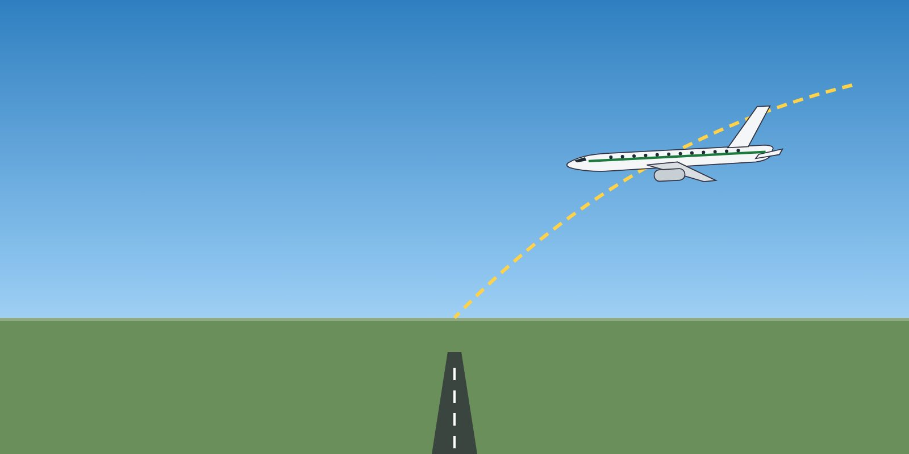

Module 2 · PBN Operations
Lesson 04: RNP Approaches: LNAV, LNAV/VNAV, LPV
Lesson narration
Checking for narration…
Learning objectives
- Distinguish the RNP APCH minima lines.
- Apply the temperature limits for baro-VNAV.
- Fly RNP approaches with the correct technique and go-around criteria.

Minima lines on an RNP chart
| Minima | Guidance | Type |
|---|---|---|
| LNAV | Lateral only — flown with CDFA to an MDA | 2D |
| LNAV/VNAV | Lateral + barometric vertical guidance (baro-VNAV) to a DA | 3D |
| LP | Lateral SBAS guidance to an MDA | 2D |
| LPV | Lateral + vertical SBAS guidance to a DA | 3D |
Use only the minima line your aircraft is certified and the company is authorised for. In EASA rules, RNP APCH (LNAV, LNAV/VNAV, LP, LPV) does not need a specific approval, but crews must be trained; RNP AR APCH requires a specific approval (SPA.PBN).
Temperature and baro-VNAV
- In cold air, the baro-VNAV path is lower and shallower than published; in hot air it is higher and steeper.
- Charts with LNAV/VNAV minima state a temperature limit — below it, LNAV/VNAV must not be used (use LNAV minima or another approach).
- Check the aerodrome temperature against the chart before every LNAV/VNAV approach.
Technique
- Brief the approach with the chart and the FMS: minima, vertical path angle, temperature limit, missed approach.
- Be stabilised by the company gates; use the autopilot and the appropriate vertical mode as your SOP requires.
- Monitor lateral and vertical deviations. Go around if the deviation limits in your SOP are exceeded, or on any navigation alert (e.g. loss of integrity) — unless the required visual references are established.
- The missed approach is part of the RNP procedure — fly it in LNAV as published.
Key takeaways
- LNAV and LP = 2D to an MDA; LNAV/VNAV and LPV = 3D to a DA.
- RNP APCH: no specific EASA approval but training required; RNP AR: specific approval.
- Respect the chart temperature limit for baro-VNAV.
- Go around on excessive deviation or navigation alert.
Knowledge check
The OAT is below the minimum temperature published for LNAV/VNAV on the chart. What do you do?